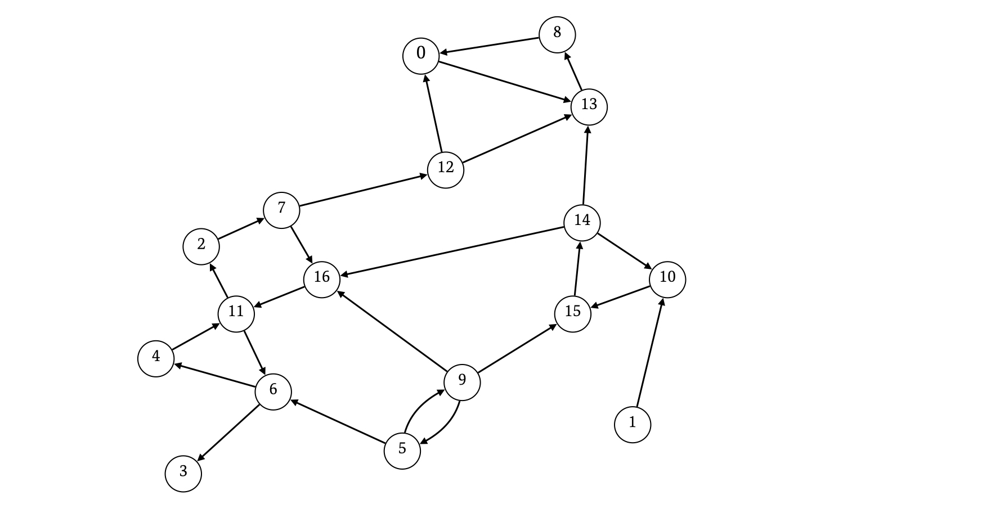
有向グラフ \(G\) の頂点集合の部分集合で、以下を満たす集合 \(S\) を強連結成分 ( SCC ) といいます。
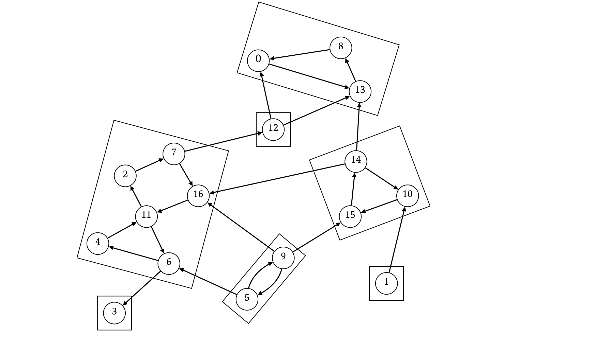
\(G\) の強連結成分は複数種類存在し、それらの集合はいずれも互いに素です。\(G\) の強連結成分分解では、\(G\) の頂点がどの強連結成分に属するかを特定し、また、強連結成分同士の関係をグラフとして構築します。
頂点 \(x\) が属する強連結成分を \(c_x\) とします。有向グラフ \(G\) において、辺 \((u \rightarrow v)\) の端点 \(u,v\) がそれぞれ相異なる強連結成分 \(c_u,c_v\) に属しているなら、それら \(2\) つの強連結成分の関係を辺 \((c_u \rightarrow c_v)\) で表現します。
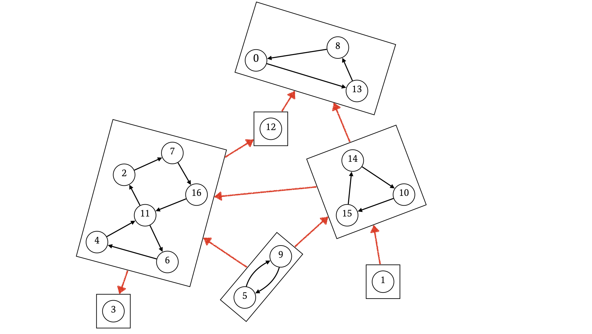
強連結成分同士の関係によって構築される有効グラフを \(Gs\) とすると、\(Gs\) は多重辺を持つ DAG (平路を持たない有向グラフ) になります。ただし、今回は多重辺をマージして \(1\) つの辺として扱うことにします。辺に重みがついている場合は重みをどうマージするのかも考慮する必要があります。
\(Gs\) は DAG なので、頂点をトポロジカルソートすることができます。\(Gs\) の頂点、すなわち各強連結成分には頂点番号が割り振られますが、これから紹介する強連結成分分解アルゴリズムでは、それらの番号の割り当てがトポロジカルソートの結果の \(1\) つになります。
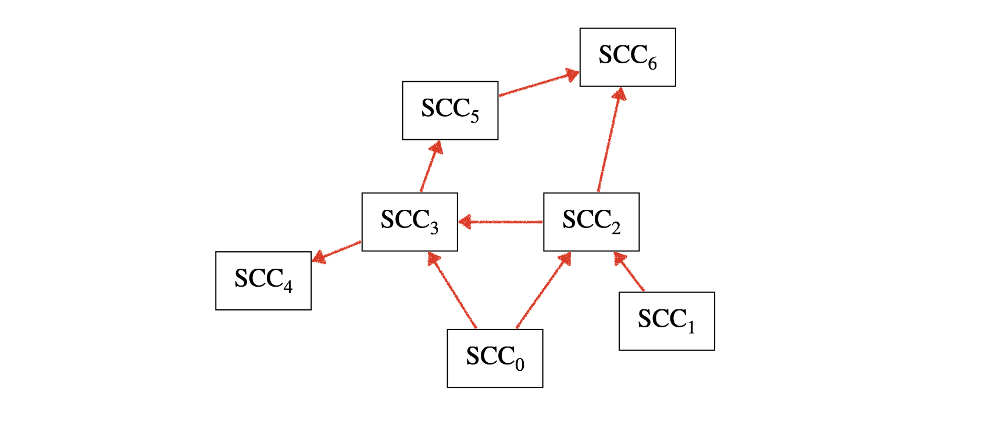
アルゴリズムは \(2\) つのステップからなります。
未到達の頂点が存在しなくなるまで、以下の操作を繰り返します。
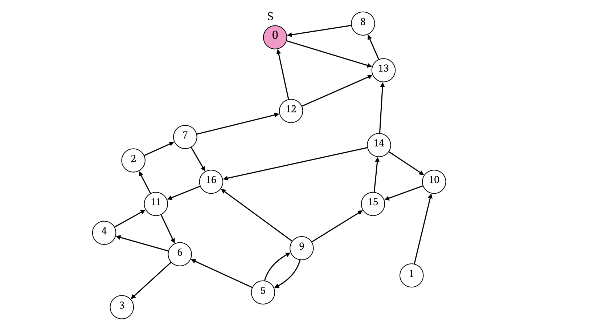
ここで、ステップ \(1\) の DFS を通して、これ以上移動不可能であることが判明するタイミングが早い順に、頂点に数値 (\(\mathrm{goback\_ time}\)) を \(0\) から割り当てていきます。
頂点 \(x\) からこれ以上移動不可能であることが判明するとは、頂点 \(x\) から出る辺を調べ終わったタイミングのことです。
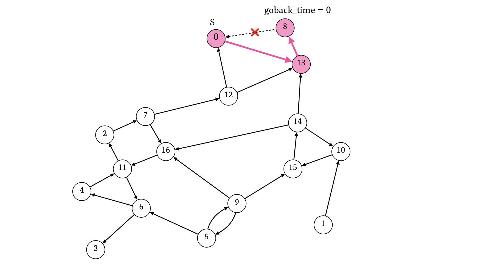
\(\mathrm{goback\_ time}\) が小さいほど、移動不可能であることが判明するタイミングが早いことを表します。
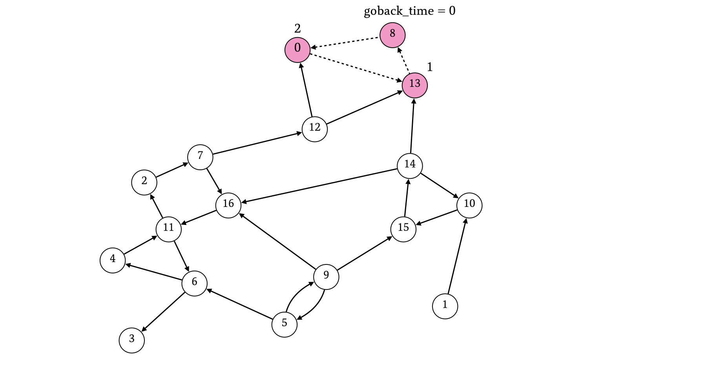
これ以上探索できなくなったら、未到達の頂点から新たに頂点を選び、そこから改めて DFS と \(\mathrm{goback\_ time}\) の割り当てを行います。
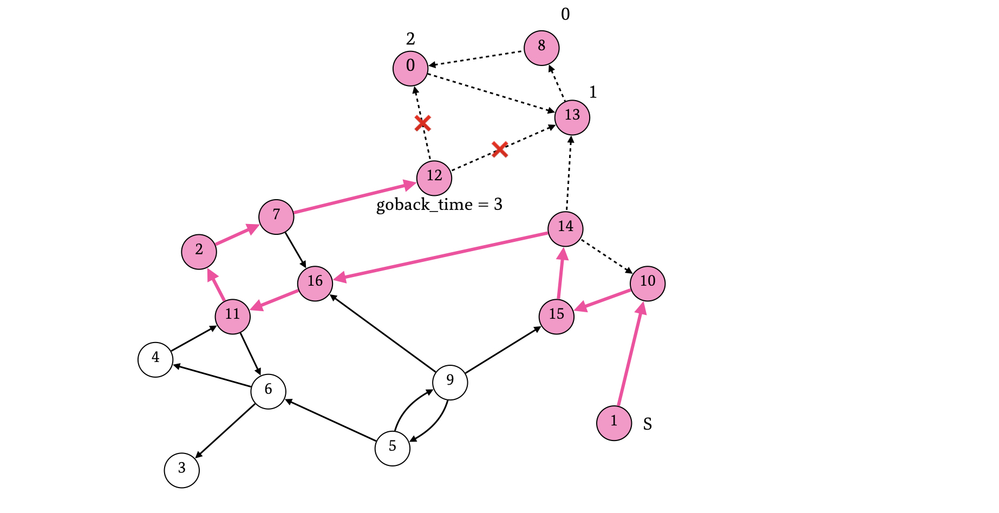
この時、ステップ \(1\) においてすでに訪れた頂点はいずれも到達済みとして枝刈りします。
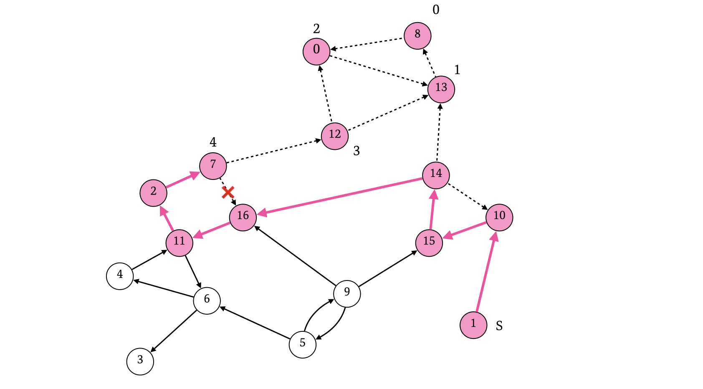
複数の辺が出ている頂点は、それら全てが移動不可能と判明したタイミングで \(\mathrm{goback\_ time}\) に数値を割り当てます。
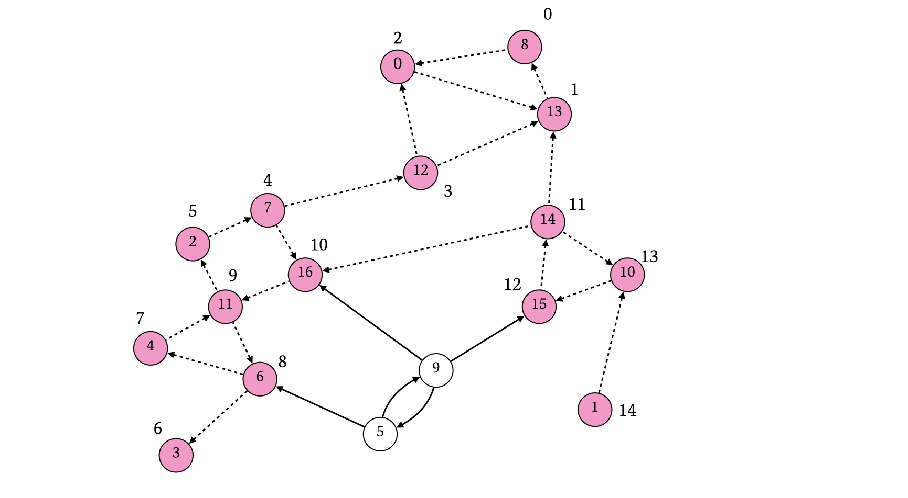
残りの未到達頂点についても、同様に DFS を行ってください。
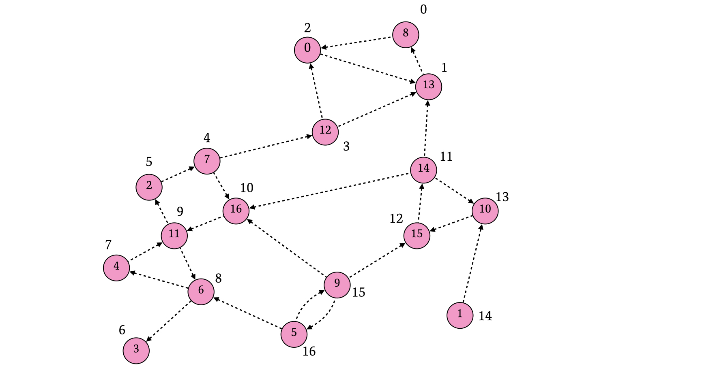
始点にする未到達頂点を探す操作は、頂点 \(0\) から到達済み頂点をスキップしながらイテレートしていけば良いです。
このステップでは、\(G\) の辺の始点と終点を入れ替えた辺 (逆辺) で構成されるグラフ \(rG\) を考えます。
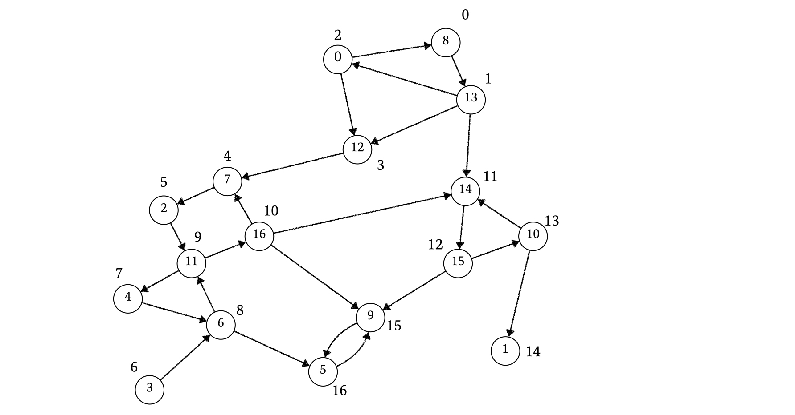
未到達の頂点が存在しなくなるまで、以下の操作を繰り返します。
頂点 \(S\) を始点とする \(rG\) 上の DFS で (ステップ \(2\) において) 初めて到達できた頂点は \(S\) と同じ強連結成分に属します。つまり、ステップ \(2\) における DFS を一回行うと、強連結成分を \(1\) つ構築できます。
また、ステップ \(2\) のイテレートにおいて、\(i\) 番目 (0-index) の DFS によって構築される強連結成分には、強連結成分同士の関係を表す有向グラフ \(gs\) における頂点番号として \(i\) を割り当てておきます。
頂点 \(S\) を始点とする DFS の途中で現在実行中の DFS より前 (かつステップ \(2\)) の DFS で到達済みの頂点に到達できた場合、その頂点を \(y\) とすると、強連結成分同士の関係を表す有向グラフ \(Gs\) において、頂点 \(y\) が属する強連結成分 \(c_y\) から、現在構築中の強連結成分 \(c_S\) への辺が存在します。よって、このタイミングで \(Gs\) の有向辺 \((c_y \rightarrow c_S)\) を構築できます。なお、実際の処理ではこの時点で強連結成分 \(c_S\) の番号が判明しています。
またアルゴリズムの手続を考えると、辺の構築を行う時点で、頂点 \(y\) が属する強連結成分 \(c_y\) をすでに特定できていることが保証されています。ステップ \(2\) では逆辺を考えているので、強連結成分の構築がちゃんとできているなら、ここでの辺の構築の正当性は自明です。
DFS で初めて到達した頂点で強連結成分を構築します。以下の図は 0-index で \(0\) 番目の DFS の結果なので、強連結成分には番号 \(0\) を割り当て、\(\mathrm{SCC}_0\) とします。
なお、実用上は強連結成分のデータを構造体などで集約して管理しておくと良いでしょう。頂点重みのマージや、属する頂点の集合もこの構造体で管理すると便利です。
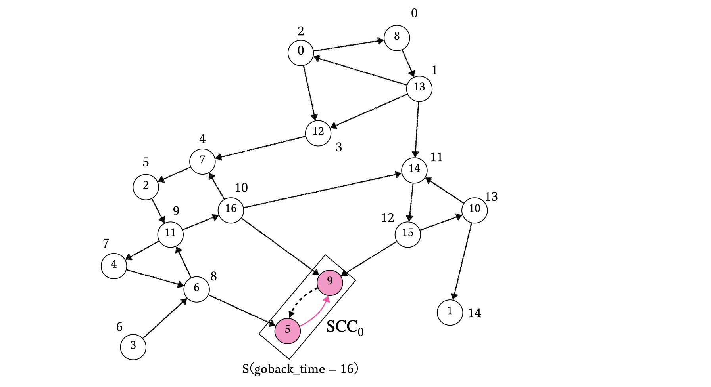
このイテレートではステップ \(2\) において到達済みの頂点をスキップし、未到達の頂点のうち \(\mathrm{goback\_ time}\) が最大の頂点を始点として改めて DFS を続けます。
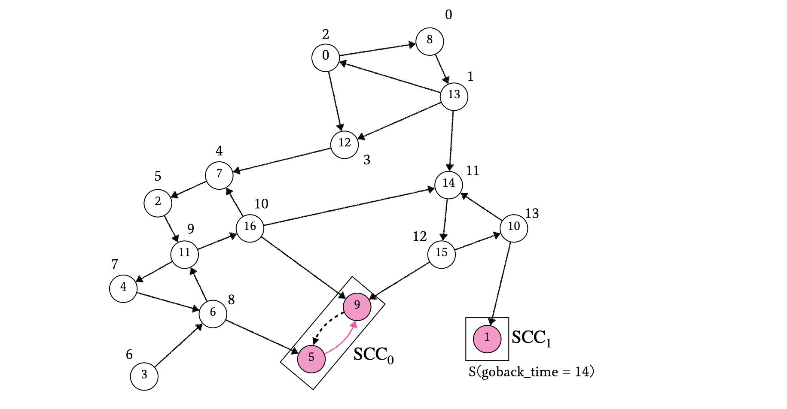
\(i\) 回目の DFS で、すでに構築した強連結成分 \(\mathrm{SCC}_x\) 内の頂点に到達できる場合、強連結成分同士の関係を表す有向グラフ \(Gs\) における辺 \((\mathrm{SCC}_x \rightarrow \mathrm{SCC}_i)\) \((x \leq i)\) を構築します。
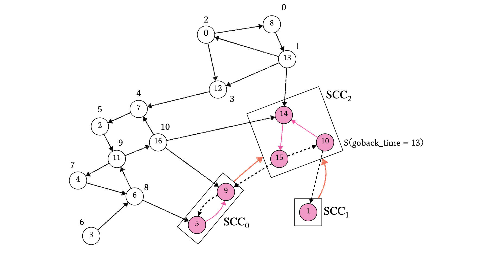
このように \(\mathrm{SCC}\) および \(Gs\) を構築すると、\(\mathrm{SCC}\) に割り振られた番号は \(Gs\) におけるトポロジカルソートの結果の \(1\) つになります (トポロジカルソートの結果は一意ではないことに注意) 。
ステップ \(2\) の DFS で、始点 \(S\) から頂点 \(x\) に初めて到達した場合、\(S\) と \(x\) が同じ強連結成分に属することを証明します。
ステップ \(2\) の DFS は逆辺によるグラフ \(rG\) 上で行うので、\(S\) から \(x\) に到達可能ということから、元のグラフ \(G\) 上で頂点 \(x\) から頂点 \(S\) へのパスが存在することがわかります。また、ステップ \(2\) の手続きより、頂点 \(S\) の \(\mathrm{goback\_ time}\) に割り当てられた数値は、頂点 \(x\) の \(\mathrm{goback\_ time}\) に割り当てられた数値よりも大きいことがわかります。
ここで、元のグラフ \(G\) 上で頂点 \(S\) から頂点 \(x\) へのパスが存在しない、すなわち \(G\) 上で頂点 \(x\) から頂点 \(S\) 方向に一方通行であると仮定して、背理法による証明を行います。
元のグラフ \(G\) 上に頂点 \(x\) から頂点 \(S\) へのパスが存在することは先述の通りなので、頂点 \(x\) の \(\mathrm{goback\_ time}\) は、仮定が成り立つならば必ず頂点 \(S\) の \(\mathrm{goback\_ time}\) よりも後に数値が割り振られることになり、頂点 \(S\) の \(\mathrm{goback\_ time}\) に割り当てられた数値は、頂点 \(x\) の \(\mathrm{goback\_ time}\) に割り当てられた数値よりも小さくなります。これは事実と異なるので、仮定は成り立たないことがわかります。
よって、元のグラフでは \(S\) から \(x\)、\(x\) から \(S\) の双方向にパスが存在します。これは \(S\) と \(x\) が同じ強連結成分に属する条件を満たします。
(DFS での到達済みか未到達かは関係なく) グラフ \(rG\) 上で \(S\) からのパスが存在しない頂点 \(x\) について、\(S\) と \(x\) が同じ強連結成分に属さないことを証明します。このとき、元のグラフ \(G\) 上に \(x\) から \(S\) へのパスが存在しないので、\(S\) と \(x\) は強連結成分である条件を満たしません。
ステップ \(2\) において、ある頂点 \(x\) が、始点 \(S\) からの DFS の開始前の時点で到達済み場合、頂点 \(x\) はそれよりも前に \(S\) でないある始点 \(t\) からの DFS によって初めて到達済みの状態になったことがわかります。
\(t\) から \(x\) に初めて到達しているので、\(t\) と \(x\) は同じ強連結成分に属することがわかります。ここで、ステップ \(2\) の手続きより、頂点 \(S\) は、\(S\) を始点とする DFS よりも前に到達済みになった頂点のいずれからも到達できないことが保証されているので、\(t\) と \(S\) は同じ強連結成分には含まれません。よって、\(S\) と \(x\) は異なる強連結成分に属します。
以上 \(3\) つより、ステップ \(2\) における強連結成分の構築の正当性を示すことができました。
ステップ \(2\) の手続きより、\(\mathrm{SCC}_i\) に入る辺の始点の強連結成分はいずれも番号が \(i\) より小さいことが保証されています。強連結成分の関係を表すグラフは DAG なので、強連結成分 \(\mathrm{SCC}_x\) から \(\mathrm{SCC}_y\) に到達可能ならば \(x \leq y\) となっていることが保証されています。